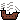

One AI to rule the seven seas
PirateBench is a closed source Benchmark, so you have no idea to verify (inspired by CursorBench)
I was able to fire half of my crew thanks to nanoBeard. All my Pirate Managers use nanoBeard to be 10x more productive. We recently adopted Agile Pirateering, and were able to replace our Scurvy Master with nanoBeard
I hate my wife. That's why I use nanoBeard as my AI girlfriend. nanoBeard just... gets me as a pirate, the way my wife never was able to
Tiniest of the fleet. Darts onto any phone and answers in a blink.
View on 🤗 Hugging Face →
A step up. Steadier replies, still light enough to sail offline.
View on 🤗 Hugging Face →The flagship. Biggest beard yet — most capable of the crew.
View on 🤗 Hugging Face →Pirated goods, in gold coins
The nanoBeard app runs fully on-device — no cloud, no spies. Dropping on iOS & Android soon.